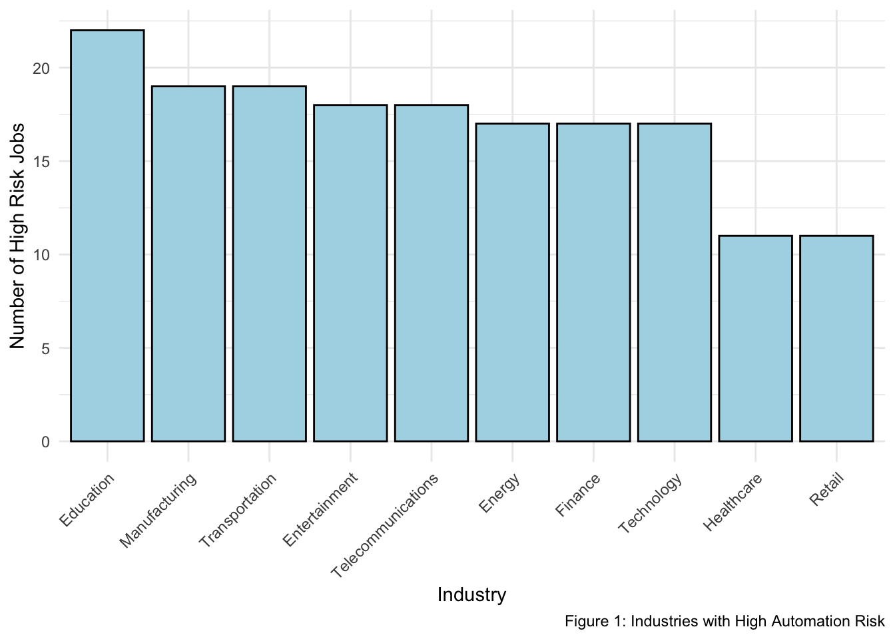
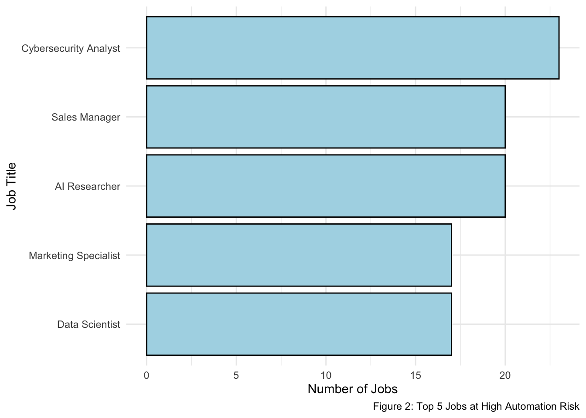

The rapid rise of artificial intelligence (AI) and automation is reshaping industries and altering the nature of work. This blog post explores which sectors and job roles are most at risk of being automated, revealing surprising insights about the future of work.
With AI adoption accelerating across industries, the workforce is facing unprecedented disruption. Automation is not just affecting repetitive, low-skill jobs but also highly technical roles. This analysis aims to pinpoint which industries and job titles are most vulnerable to automation, providing a data-driven perspective on the future of work.
Data Source : The dataset used for this analysis, AI and Job Market Insights, was sourced from Kaggle. It includes information on various job roles, industries, and the level of risk associated with automation for each. You can access the dataset here: Kaggle Dataset.
Variables of the dataset:
Job_Title: The job title being analyzed.
Industry: The industry to which the job belongs.
AI_Adoption_Level: The level of AI adoption in the industry (low, medium, high).
Automation_Risk: Likelihood that the job will be automated (low, medium, high).
Required_Skills: Skills necessary for the job role.
Remote_Friendly: Whether the job allows for remote work.
Job_Growth_Projection: The expected growth or decline of jobs in this sector.
Data Cleaning Process: I initiated the data cleaning process by loading a comprehensive dataset encompassing various industries. I converted key columns—AI Adoption Level and Automation Risk—into factors to enhance the accuracy of the analysis. Subsequently, I filtered the dataset to focus specifically on jobs at high risk of automation, thereby targeting the most vulnerable sectors. Finally, I summarized the findings by counting the number of high-risk positions within each industry, which will facilitate the creation of clear and informative visualizations.
Which Industries are Facing the Biggest Challenges?
The analysis reveals that certain industries are more exposed to automation risk than others. Surprisingly, Education tops the list as the sector most vulnerable to automation. Despite its traditionally human-centered nature, the rise of AI-powered tools like virtual learning platforms and automated grading systems is gradually reducing the need for human intervention.
In addition, Manufacturing and Transportation are also heavily impacted by automation, as repetitive tasks are increasingly taken over by machines. Entertainment and Telecommunications follow closely behind, driven by the growing use of AI in content creation, customer service, and digital operations.
In Figure 1, we can see a clear breakdown of the industries facing high automation risk.
This Figure 1 highlights the industries most exposed to automation, with Education, Manufacturing, and Transportation emerging as the most vulnerable sectors.
Which Jobs are at High Risk of Automation?
When it comes to specific job roles, the results are equally striking. Cybersecurity Analysts, despite their highly specialized skill set, top the list of high-risk jobs. This reflects the growing role of AI in automating threat detection and security protocols, reducing the need for human oversight.
Other roles, such as Sales Managers, AI Researchers, and Marketing Specialists, also face significant risks. AI is increasingly taking over customer relationship management, research tasks, and data analysis. This challenges the assumption that advanced technical skills shield workers from automation risks.
In Figure 2, you can see a visual representation of the top 5 job titles most vulnerable to automation.

This Figure 2 shows the job roles most at risk of being automated, with Cybersecurity Analysts, Sales Managers, and AI Researchers leading the list.
In addition to the top three jobs at high risk of automation, several other roles from various industries also face significant vulnerability, as shown in Table 1. Data Scientists and Marketing Specialists, both of which require advanced analytical and creative skills, are surprisingly at high risk, with AI increasingly taking over tasks like data analysis and content generation. Similarly, Product Managers and UX Designers, known for their strategic and design roles, are being impacted as AI tools streamline product development and user experience prototyping. Even traditional roles like HR Managers and Operations Managers are affected as AI is increasingly automating tasks such as recruitment, performance management, and operational workflows, demonstrating the widespread reach of automation across diverse job functions.
| Job Title | Number of High Risk Jobs |
|---|---|
| Cybersecurity Analyst | 23 |
| AI Researcher | 20 |
| Sales Manager | 20 |
| Data Scientist | 17 |
| Marketing Specialist | 17 |
| Product Manager | 16 |
| UX Designer | 16 |
| HR Manager | 15 |
| Software Engineer | 15 |
| Operations Manager | 10 |
*Based on the dataset used for analysis
Conclusion
As AI and automation continue to reshape industries, the impact extends beyond low-skill, repetitive tasks, affecting even highly technical roles. From cybersecurity analysts to AI researchers, no sector is entirely shielded from automation, as our analysis has shown. Surprisingly, fields like education, manufacturing, and transportation are particularly vulnerable, with AI automating everything from assembly lines to virtual learning systems.
At the same time, roles that involve significant human interaction, such as those in retail and healthcare, are also feeling the effects. Self-checkout technologies and AI-driven inventory systems are revolutionizing retail, while AI-assisted diagnostics and administrative tools are making their way into healthcare.
The key takeaway from this analysis is clear: the future of work is evolving rapidly, and both businesses and employees must focus on developing skills that are less susceptible to automation. This means not only mastering technical expertise but also nurturing creativity, emotional intelligence, and problem-solving abilities, qualities that machines have yet to replicate. As the job market shifts, continuous adaptation will be essential for staying ahead in an AI-driven world.
References
Manyika, J, Lund, S, Chui, M, Bughin, J, Woetzel, J, Batra, P, Ko, R & Sanghvi, S 2017, Jobs lost, jobs gained: What the future of work will mean for jobs, skills, and wages, McKinsey & Company. https://www.mckinsey.com/featured-insights/future-of-work/jobs-lost-jobs-gained-what-the-future-of-work-will-mean-for-jobs-skills-and-wages.
LinkedIn 2024, Linkedin.com, viewed 30 September 2024, https://www.linkedin.com/pulse/future-work-ais-impact-jobs-skills-2024-dave-balroop-2u28c/.